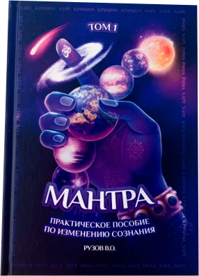
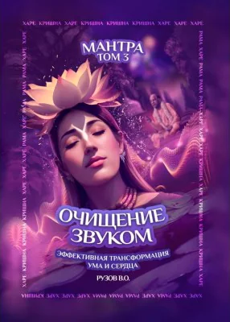
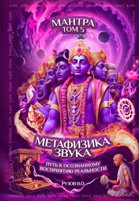
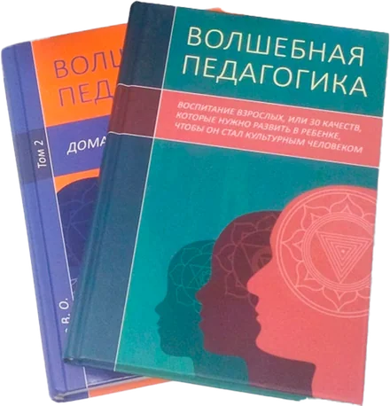
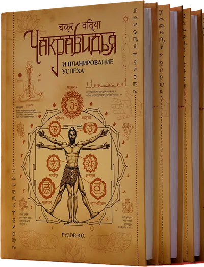
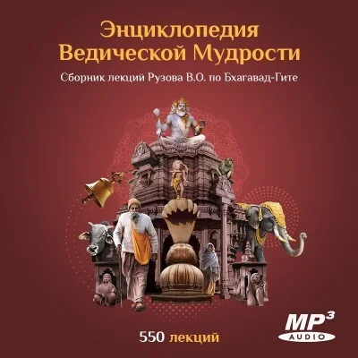

Вячеслав Олегович Рузов — писатель, философ и духовный наставник, по инициативе которого появился клуб «Баланс». Он автор более 50 книг о счастье: о семье и любви, воспитании детей, мантра-медитации, карме, успехе и поиске своего предназначения. В этих книгах ведическая мудрость и восточная психология говорят на языке современной жизни — через притчи, живые истории и практические советы. Ниже — список книг Рузова по темам, бестселлеры последних лет, отзывы читателей и ответ на вопрос, где купить книги.
Бестселлеры Рузова 2023–2025
Три книжные серии последних лет, к которым читатели возвращаются чаще всего.
Многотомник «Мантра»
Пять книг о мантра-медитации — по словам автора, о самом главном искусстве на планете: повторять мантру так, чтобы достичь духовного совершенства за одну жизнь. Каждый том — следующая ступень практики, от первого знакомства с мантрой до непрерывного воспевания и тонкостей метафизики звука.

Том 1. «Мантра»- Том 2. «Медитируй!»

Том 3. «Очищение звуком»- Том 4. «64 круга»

Том 5. «Метафизика звука»
Купить серию «Мантра» — тома 1–5 комплектом

«Волшебная педагогика»
Книга-основа для тех, кто хочет понять, каким бывает человек культурный, воспитанный и развивающийся. Её читают родители, учителя и воспитатели: как заложить в ребёнке добрые качества характера, вырастить его счастливым — и расти вместе с ним. Второй том, «Домашний миротворец», — о том, как сохранять в семье мир.

«Чакравидья и планирование успеха»
Одна из главных новинок последних лет. Чакравидья — наука о развитии сознания: она помогает понять себя и раскрыть свои возможности в любом сознательном возрасте, а заодно спланировать успех в делах. Второй том, «Чакравидья и раскрытие лотоса сердца», — о пути безусловной любви через анахата-чакру.
Книги Рузова: список по темам
Вячеслав Рузов пишет о том, что касается каждого: о семье и детях, работе и здоровье, смысле жизни. Мы разложили его книги по темам, чтобы было проще найти свою. Названия ведут в интернет-магазин, где книгу можно купить.
Книги о семье и отношениях
- «Семейная нектарология»
- «Женское счастье» — о силе женщины в семье и о том, кто на самом деле правит миром
- «Волшебство любви» — вошла в сборник «Технологии достижения успеха»
- «Два счастья в одни руки»
- «Моя жена — Богиня» — ведический взгляд на брак и на роли мужа и жены
- «Не сошлись характерами» — какие качества нужно развить мужчине и женщине, чтобы жить в согласии
- «Моё предназначение — любить, или героический путь успешного семьянина» — как семейная жизнь приносит счастье и помогает духовному росту, если помнить о её цели
Книги о воспитании детей
- «Волшебная педагогика» — практическое руководство для родителей, учителей и воспитателей: как развить в ребёнке добрые качества характера
- «Волшебная педагогика. Том 2. Домашний миротворец» — семья — место мира, и сохранять его нужно всеми способами
Книги об успехе, работе и команде
- «Технологии достижения успеха» новинка — сборник 2025 года о работе, семье, благополучии и внутренней гармонии
- «Успешно жить не запретишь» — вошла в сборник «Технологии достижения успеха»
- «Два столпа успеха» — два семинара в одной книге: «Вихара» — наука об отдыхе и «Амицитология» — наука о дружелюбии и сотрудничестве
- «Любовь проявляется в сотрудничестве, или как создать команду мечты?» — качества характера, которые ведут к успеху и руководителя, и подчинённого
- «Ключи к победе, или что делать, когда пришла беда» — наука побеждать кризисы и менять жизнь к лучшему
- «Чакравидья и планирование успеха» новинка — наука о развитии сознания: понять себя и раскрыть свои возможности
- «Как победить власть времени»
Книги о мантре и медитации
- «Мантра» — том 1, практическое пособие по изменению сознания
- «Медитируй! Самоучитель по домашней мантра-медитации» — том 2: концентрация, сосредоточение и внимательность
- «Очищение звуком. Эффективная трансформация ума и сердца» — том 3
- «64 круга. Методика непрерывного и бескорыстного воспевания» — том 4, опыт автора, который повторяет мантру больше 30 лет
- «Метафизика звука. Путь к осознанному восприятию реальности, или как медитацию не превратить в трагедию» — том 5: как понять, что медитация идёт правильно и приносит плоды
Книги о душе, карме и сознании
- «Душа» — как перейти от страдания к состраданию, если искать счастье в духе, а не в материи
- «Как сжечь карму» — книга об успехе: важно не само тело, а то, что мы успеем сделать, пока в нём живём
- «Формула памяти, или как вспомнить прошлые жизни и узнать день своей смерти» — как подготовиться к встрече, которая ждёт каждого
- «Формулы трансформации сознания» — как устоять перед соблазнами современного мира — по истории Аджамилы из «Шримад-Бхагаватам»
- «Искусство контроля чувств как путь к истинной свободе» — практическая психология: как управлять чувствами и эмоциями
- «Опасные игры в духовность» — почему игра в духовность не всегда ведёт к настоящему развитию
- «Заболел? — Не бойся!» — как провести время болезни с пользой для души
- «В поисках бессмертия» — роман для думающих людей, которым небезразлична собственная судьба
Притчи и книги о счастье
- «108 способов стать счастливым» — по мотивам «Шри Кришна Аштоттара Намавали» из «Нарада-панчаратры»
- «108 способов поделиться счастьем» — семинар по «108 именам Шримати Радхарани» Рагхунатхи Даса Госвами
- «Капельки мудрости, или 100 вопросов, меняющих жизнь» — вопросы, с которых начинается жизнь человека: кто я, в чём счастье, что есть истина
- «Астрологические притчи» — принципы ведической астрологии в мудрых историях — хорошее начало для тех, кто думает о школе астрологии
Книги о доме
- «Васту для городской квартиры» — ведическая наука о гармоничном пространстве — для обычной квартиры
Здесь собраны основные книги, а все издания автора можно найти в интернет-магазине «Доброшоп». Библиография продолжает расти: в январе 2025 года вышли новые издания, и Вячеслав Олегович продолжает писать.
Вячеслав Рузов — писатель, философ, духовный наставник
Многие знают Вячеслава Олеговича Рузова как современного мудреца. Свою жизнь он посвятил просвещению: переводит духовные знания Востока на язык сегодняшнего дня и помогает людям решать как житейские, так и духовные задачи.
- 50+ книг о счастье
- 10 000+ лекций
- 5000+ консультаций
Писатель, путешественник и философ, он прочитал больше 10 000 лекций по восточной философии и востоковедению. Темы самые разные: семейные отношения и психология, командообразование и личностный рост, процветание и предназначение, поиск истины и наставничество.
Просветительская работа Вячеслава Олеговича дала жизнь проектам, которые действуют и сегодня:
- московский просветительский клуб «Баланс»;
- ежедневные утренние настройки;
- радио «Гималаи» и телеканал «Баланс-ТВ»;
- программа по дарению книг библиотекам мира;
- вечера музыкальных и танцевальных искусств;
- международный фестиваль «Волшебство»;
- консультативный центр «Бала»;
- образовательные курсы по семейным отношениям и духовному развитию.
Лекции Рузова по «Бхагавад-гите»
Особую популярность получили лекции Вячеслава Олеговича по «Бхагавад-гите». Они касаются всех сторон человеческой жизни и раскрывают:
- тайны вселенной и устройство сознания;
- древние йогические методики;
- мудрость восточных учений;
- искусство гармоничных отношений;
- принципы здорового образа жизни.
Живые лекции и встречи проходят в клубе и онлайн: утренние настройки, вечерние встречи, онлайн-встречи. Записи прошлых лекций — в видеоархиве.

«Энциклопедия ведической мудрости»
Сборник лекций Рузова по «Бхагавад-гите»: больше 550 аудиолекций в формате MP3. Его можно слушать по порядку, как цельный курс, или выбирать темы, которые волнуют сейчас.
Отзывы читателей
Мудрость гласит: «Воспитание детей начинается с воспитания родителей». Эта книга — настоящая находка для взрослых, наука о том, как вести себя возвышенно, чисто и благородно. Именно она стала волшебным толчком к изменениям в отношениях с моим сыном: мы стали настоящими друзьями. Книга всегда у меня под рукой, и на какой бы странице я её ни открыла, получаю помощь и вдохновение.
Кто я? Тело, у которого есть душа, или душа, застрявшая в этом теле? Всё, что вы хотели узнать о душе и духовной жизни, но не у кого было спросить, — в этой книге. Ответы ждут именно вас.
Читаю одновременно в трёх местах: по порядку с начала — и конспектирую, отдельно — раздел про семь уровней любви, пытаясь понять, на каком уровне мотивы моих поступков, и ещё истории о любви — это увлекательно и отлично запоминается. Рекомендую семейному человеку, неважно, атеисту или верующему.
Смысл семейной жизни в том, чтобы научиться помогать друг другу в развитии сознания и передать эти навыки детям. В книге много притч, поэтому понимать легко, и много практических советов о том, как построить счастливую семью.
Где купить книги Рузова
Книги Вячеслава Рузова продаются в интернет-магазине «Доброшоп»: там есть издания автора, комплекты книг со скидкой, а также записи лекций и семинаров.
Чтобы заказать книги, договориться о личной встрече с Вячеславом Олеговичем или узнать расписание лекций, ретритов и утренних настроек, оставьте заявку — секретарь перезвонит и всё расскажет.
Частые вопросы
Сколько книг написал Вячеслав Рузов?
Больше 50. Библиография продолжает расти: в январе 2025 года вышли новые издания, среди них — сборник «Технологии достижения успеха».
С какой книги начать читать Рузова?
Выбирайте по теме, которая волнует сейчас. О семье — «Женское счастье» или «Моя жена — Богиня», о детях — «Волшебная педагогика», о медитации — первый том «Мантры», о смысле жизни — «Капельки мудрости, или 100 вопросов, меняющих жизнь».
Где купить книги Рузова?
В интернет-магазине «Доброшоп» (dobro-shop.com): там собраны книги автора и комплекты со скидкой. Заказать книги можно и по заявке — секретарь перезвонит и всё подскажет.
Где слушать лекции Рузова?
Лекции по «Бхагавад-гите» собраны в аудиосборник «Энциклопедия ведической мудрости» — больше 550 лекций в MP3. Живые лекции и встречи проходят в клубе «Баланс» и онлайн, записи — в видеоархиве клуба.
Кто такой Вячеслав Рузов?
Писатель, путешественник, философ и духовный наставник. Прочитал больше 10 000 лекций по восточной философии и провёл свыше 5000 консультаций. По его инициативе появились клуб «Баланс», радио «Гималаи» и программа дарения книг библиотекам мира.
Можно ли встретиться с Вячеславом Рузовым лично?
Да. Оставьте заявку на личную встречу — секретарь перезвонит и расскажет о ближайших лекциях, ретритах и утренних настройках.
Заказ книг, личная встреча, расписание лекций — оставить заявку